Tư vấn cách chọn lựa máy chà sàn nhà gia đình
Máy chà sàn gia đình là thiết bị vệ sinh hiện đại ngày càng được ưa chuộng bởi khả năng làm sạch sàn nhà hiệu quả, tiết kiệm thời gian và công sức cho người sử dụng. So với phương pháp lau sàn truyền thống, máy chà sàn mang đến nhiều ưu điểm vượt trội, giúp sàn nhà luôn sạch bóng và sáng loáng.
Máy chà sàn gia đình là gì?
Máy chà sàn gia đình là thiết bị hiện đại, mang đến giải pháp tối ưu cho công việc dọn dẹp nhà cửa. Nhờ khả năng chà rửa và hút nước bẩn hiệu quả, máy giúp người dùng tiết kiệm thời gian và công sức, đồng thời đảm bảo sàn nhà luôn sạch bong.
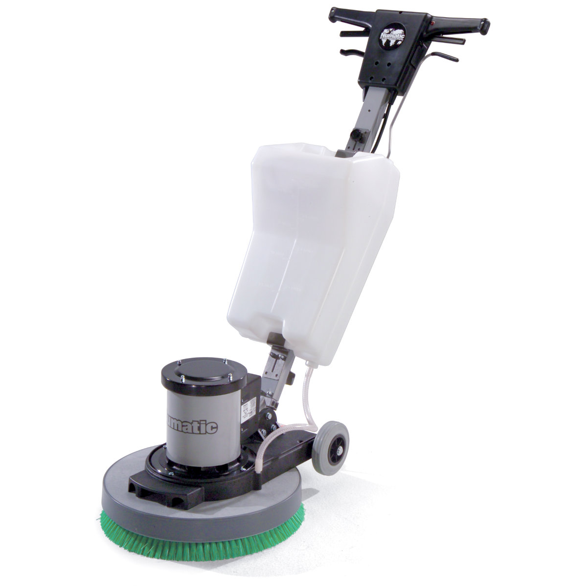
Máy chà sàn gia đình ngày càng được sử dụng phổ biến
Ưu điểm nổi bật của máy chà sàn gia đình?
Máy chà sàn gia đình ngày càng trở nên phổ biến bởi những ưu điểm vượt trội, mang đến trải nghiệm vệ sinh sàn nhà hoàn toàn mới. Dưới đây là những lý do khiến bạn nên sở hữu ngay một chiếc máy chà sàn cho gia đình mình:
Thích hợp với mọi loại sàn
- Khả năng làm sạch hiệu quả trên nhiều loại sàn nhà khác nhau như: gạch men, đá hoa cương, gỗ, sàn nhựa,…
- Máy dễ dàng loại bỏ các vết bẩn cứng đầu, bám dính lâu ngày trên sàn nhà, ngay cả những vết bẩn do dầu mỡ, thức ăn, bụi bẩn…gây ra
- Giúp sàn nhà luôn sáng bóng, sạch sẽ và bảo vệ sức khỏe của cả gia đình.
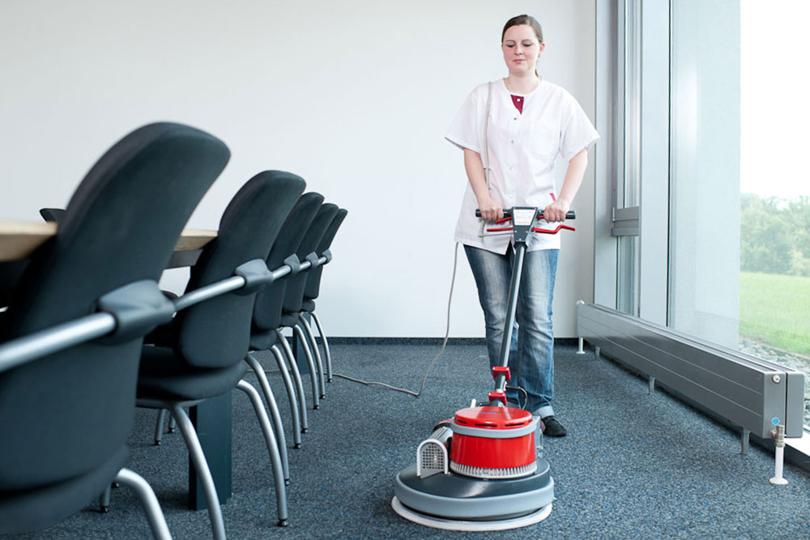
Máy chà sàn có thể sử dụng trên thảm
Loại bỏ bụi bẩn cứng đầu
- Lực chà mạnh mẽ kết hợp với bàn chải xoay giúp đánh bay mọi vết bẩn cứng đầu, bám dính lâu ngày trên sàn nhà.
- Máy có thể điều chỉnh tốc độ chà phù hợp với từng loại sàn nhà và mức độ bẩn. Nhờ vậy, bạn có thể dễ dàng làm sạch mọi ngóc ngách trong nhà, kể cả những khu vực khó tiếp cận.
Hút nước bẩn tiện lợi
Máy tích hợp chức năng hút nước bẩn sau khi chà sàn, giúp sàn nhà khô ráo nhanh chóng, hạn chế trơn trượt, đảm bảo an toàn cho người sử dụng. Bạn không cần phải sử dụng thêm khăn lau để lau khô sàn nhà sau khi chà. Máy chà sàn giúp bạn tiết kiệm thời gian và công sức rất nhiều.
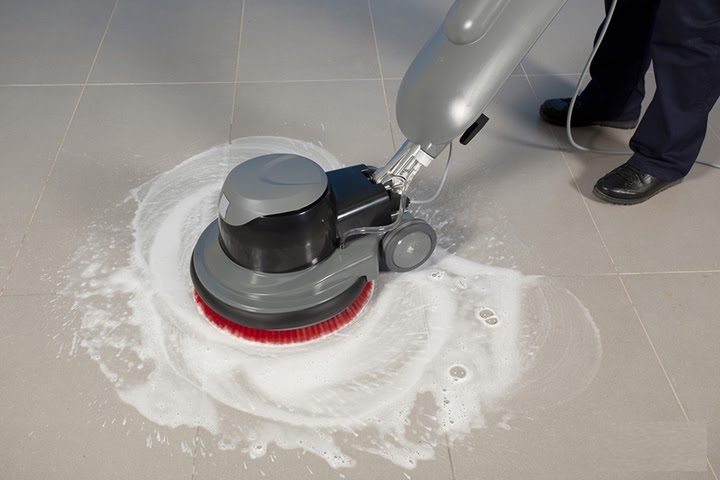
Máy sẽ trực tiếp phun chất tẩy rửa lên sàn
Tiết kiệm thời gian và công sức
Máy sử dụng lực xoay của trục và bàn chải để đánh bay các vết bẩn cứng đầu, bụi bẩn, vi khuẩn, giúp bạn hoàn thành công việc vệ sinh nhanh chóng và hiệu quả hơn so với phương pháp truyền thống. Điều này giúp giảm bớt gánh nặng công việc nhà và bạn sẽ có thêm thời gian cho gia đình và bản thân.
Dễ dàng sử dụng
Máy chà sàn gia đình có thiết kế đơn giản, dễ dàng thao tác và di chuyển với các bánh xe linh hoạt, dễ dàng vệ sinh sau khi sử dụng. Bạn có thể sử dụng máy mà không cần phải có chuyên môn hay kỹ năng đặc biệt nào. Ngoài ra, máy cũng đi kèm với hướng dẫn sử dụng chi tiết, giúp bạn sử dụng máy một cách hiệu quả.
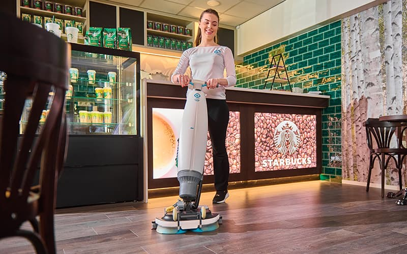
Dễ dàng thao tác và di chuyển
An toàn cho sức khỏe
- Khi hoạt động, máy sẽ trực tiếp phun chất tẩy rửa lên sàn nhà giúp bạn hạn chế tiếp xúc trực tiếp với hóa chất tẩy rửa, bảo vệ sức khỏe của bạn và gia đình.
- Việc giữ cho sàn nhà luôn luôn sạch sẽ giúp giảm thiểu nguy cơ mắc các bệnh về đường hô hấp do bụi bẩn và vi khuẩn.
Tiết kiệm chi phí
- Máy chà sàn có độ bền cao, tuổi thọ sử dụng lâu dài.
- Tiết kiệm chi phí mua các dụng cụ vệ sinh sàn nhà truyền thống như: cây lau nhà, bàn chải, hóa chất tẩy rửa,…
- Giúp bạn tiết kiệm chi phí thuê nhân viên dọn dẹp.
>>> Xem thêm: Có nên mua máy hút bụi công nghiệp cho gia đình?
Nhược điểm của máy chà sàn nhà gia đình
Ngoài những ưu điểm tuyệt vời mà máy chà sàn gia đình mang lại thì có một số loại sản phẩm vẫn có những điểm hạn chế như:
-
Cần thiết bị phụ trợ
Máy lau sàn không hút nước sẽ không thể tự làm khô sàn nhà sau khi lau. Do đó, bạn cần sử dụng thêm thiết bị khác như cây lau nhà khô hoặc máy hút bụi để hút nước bẩn trên sàn nhà. Việc này có thể gây bất tiện và tốn thời gian hơn so với sử dụng máy lau sàn có khả năng hút nước.
-
Hạn chế tính đa dụng
So với các loại máy lau sàn đa năng tích hợp nhiều chức năng như hút bụi, giặt thảm, đánh bóng sàn, máy lau sàn không hút nước có chức năng hạn chế hơn. Do đó, bạn có thể cần mua thêm các thiết bị khác để đáp ứng nhu cầu vệ sinh đa dạng.
-
Khả năng làm sạch sàn ướt kém
Khi lau sàn nhà ướt, nước bẩn có thể bám dính trên sàn lâu hơn và khó lau sạch hoàn toàn. Việc này có thể ảnh hưởng đến độ sáng bóng của sàn nhà và khiến sàn nhà dễ bám bụi bẩn trở lại.
Phân loại máy chà sàn gia đình
Hiện nay trên thị trường, có rất nhiều loại máy chà sàn nhà gia đình khác nhau. Chúng được phân loại dựa trên hai đặc điểm chính đó là tính năng và kiểu dáng. Hãy cùng tìm hiểu các loại máy được phân loại như sau:
Theo tính năng
Máy chà sàn đơn
Máy chà sàn đơn là thiết bị vệ sinh sàn nhà được ưa chuộng bởi cấu tạo đơn giản, dễ sử dụng và giá thành rẻ. Máy hoạt động hiệu quả trên các bề mặt sàn cứng như gạch men, đá hoa cương, bê tông, giúp loại bỏ mọi vết bẩn cứng đầu, trả lại sàn nhà sáng bóng. Tuy khả năng làm sạch bị hạn chế trên sàn có nhiều góc cạnh, máy chà sàn đơn vẫn là lựa chọn tối ưu cho gia đình nhờ sự nhỏ gọn, tiện lợi và tiết kiệm chi phí.
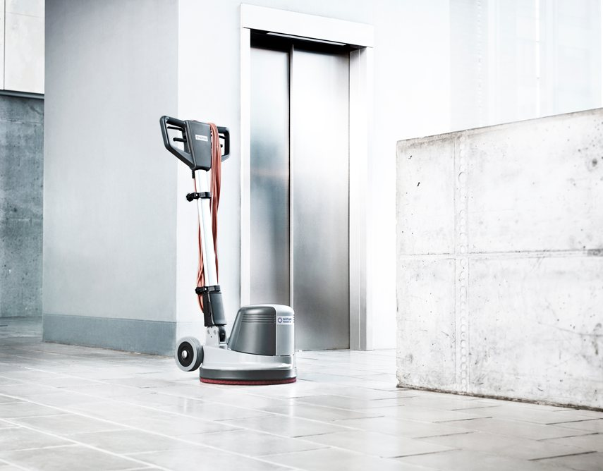
Máy chà sàn gia đình
Máy chà sàn liên hợp
Máy chà sàn liên hợp kết hợp chức năng chà rửa và hút bụi đồng thời, là sự lựa chọn lý tưởng cho các khu vực có mật độ người qua lại cao như văn phòng, nhà xưởng, bệnh viện, siêu thị và các công ty dịch vụ vệ sinh.
Ngoài ra, máy chà sàn liên hợp có thể giúp tiết kiệm thời gian và chi phí nhân công. Không những vậy, máy có bình chứa nước sạch và nước bẩn riêng biệt, tiện lợi cho việc thêm nước và xả nước trong quá trình vệ sinh. Đặc biệt, máy có khả năng làm việc hiệu quả, giảm thời gian vệ sinh đáng kể, từ đó nâng cao hiệu quả và hiệu suất công việc.
Theo kiểu dáng
Máy chà sàn cầm tay
Máy chà sàn này có kích thước nhỏ gọn, dễ di chuyển và sử dụng, mang lại sự thuận tiện trong việc vệ sinh nhà cửa. Với thiết kế đơn giản, máy cho phép thao tác dễ dàng trong mọi không gian bao gồm cả những khu vực khó tiếp cận như nhà bếp, phòng tắm, cầu thang và cửa sổ. Hơn nữa, giá thành rẻ của các loại máy chà sàn này khiến chúng trở thành lựa chọn phù hợp cho việc vệ sinh mọi ngóc ngách trong nhà. Sản phẩm này có thể coi là loại máy chà sàn nhà gia đình đáng mua cho nhiều người.
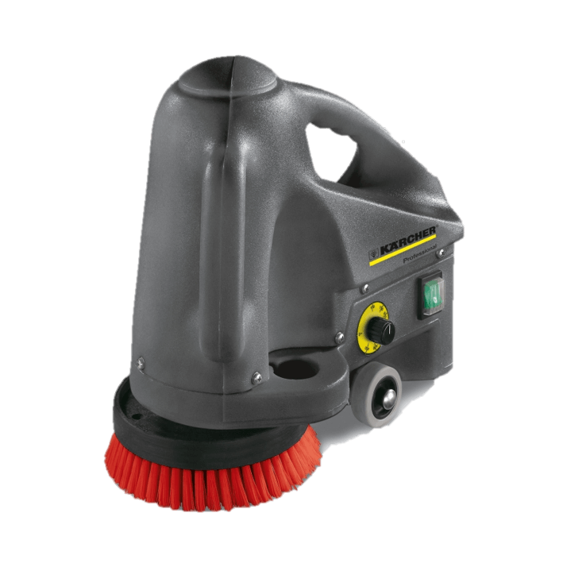
Máy chà sàn cầm tay
Máy chà sàn ngồi lái
Máy chà sàn ngồi lái có thiết kế hiện đại với buồng lái, tay lái và bàn đạp để điều khiển, giúp tiết kiệm sức lao động cho người sử dụng. Với năng suất làm việc cao và khả năng làm sạch mạnh mẽ, hiệu quả, máy rất thích hợp cho các khu vực công nghiệp và nhà xưởng. Máy đặc biệt phù hợp cho những diện tích sàn lớn và bằng phẳng, đảm bảo việc vệ sinh được thực hiện nhanh chóng và hiệu quả.
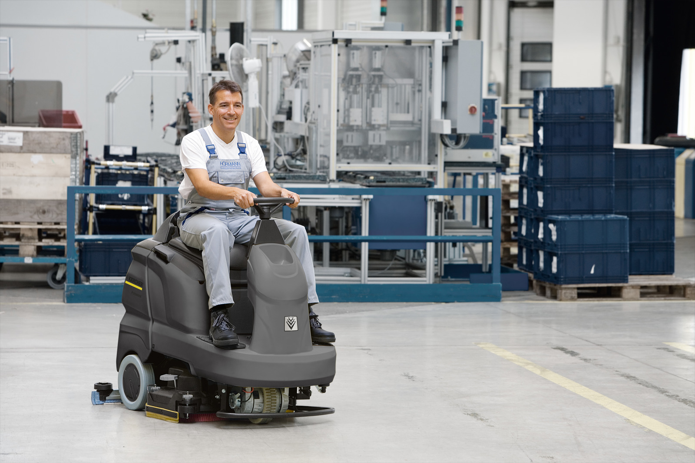
Máy chà sàn ngồi lái
>>> Tìm hiểu thêm thông tin: Nên chọn máy hút bụi công nghiệp loại nào?
Lợi ích khi sử dụng máy chà sàn nhà gia đình
- Làm sạch nhanh chóng và hiệu quả: Máy chà sàn có khả năng làm sạch các vết bẩn cứng đầu, bụi bẩn bám dính trên sàn nhà một cách nhanh chóng và hiệu quả hơn so với việc sử dụng các phương pháp truyền thống như lau chùi bằng tay hoặc cây lau nhà.
- Tăng tuổi thọ cho sàn nhà: Máy chà sàn giúp loại bỏ các chất bẩn, bụi bẩn bám dính trên sàn nhà, ngăn ngừa tình trạng sàn nhà bị bào mòn, xuống cấp và hư hại.
- Máy chà sàn có hệ thống hút bụi bẩn hiệu quả, giúp loại bỏ bụi bẩn, vi khuẩn, nấm mốc và các tác nhân gây dị ứng, tạo môi trường sống trong lành và an toàn cho sức khỏe.
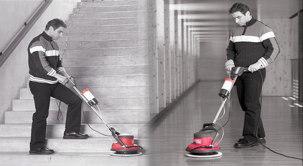
Máy chà sàn gia đình lau dọn mọi nơi trong ngôi nhà
Tiêu chí chọn máy chà sàn nhà cho gia đình chất lượng
Để lựa chọn được một chiếc máy phù hợp cho gia đình, việc tìm hiểu và đánh giá các tiêu chí về chất lượng là điều vô cùng quan trọng. Máy chà sàn gia đình không chỉ giúp tiết kiệm thời gian và công sức trong việc vệ sinh căn nhà mà còn đảm bảo hiệu quả và an toàn cho sức khỏe của mọi người. Dưới đây là một số tiêu chí giúp bạn lựa chọn được loại máy phù hợp.
Diện tích sàn nhà
- Đối với những gia đình có diện tích sàn nhà dưới 50m², bạn nên chọn máy chà sàn có công suất từ 500W đến 700W.
- Đối với những gia đình có diện tích sàn nhà từ 50m² đến 100m², bạn nên chọn máy chà sàn có công suất từ 700W đến 1000W.
- Đối với những gia đình có diện tích sàn nhà trên 100m², bạn nên chọn máy chà sàn có công suất từ 1000W trở lên.
Loại sàn nhà
- Sàn gạch men, đá hoa cương: Máy chà sàn có lực chà mạnh, khả năng đánh bóng cao.
- Sàn gỗ: Máy chà sàn có lực chà nhẹ, có chức năng hút bụi bẩn và nước bẩn.
- Sàn nhựa: Máy chà sàn có lực chà nhẹ, tránh làm trầy xước bề mặt sàn.
- Sàn có lót thảm: Máy cần có chức năng hút nước, lau khô, đảm bảo bề mặt thảm khô ráo, tránh ẩm mốc.
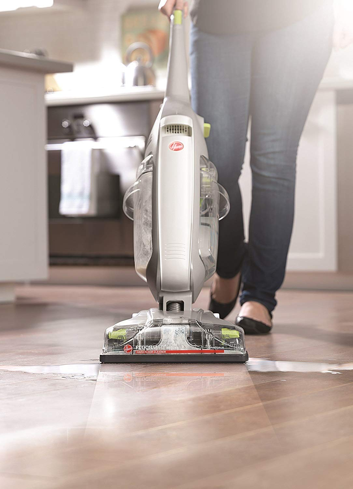
Máy chà sàn gia đình sẽ giúp bạn dọn dẹp nhà nhanh chóng
Giá thành: Trên thị trường hiện nay, giá máy chà sàn dao động từ vài triệu đồng đến vài chục triệu đồng, tùy thuộc vào thương hiệu, tính năng và công suất của máy. Bạn cần xác định rõ khả năng tài chính cũng như nhu cầu sử dụng của mình để chọn ra máy chà sàn gia đình phù hợp tránh lãng phí.
Nhu cầu sử dụng
- Gia đình, cơ sở kinh doanh nhỏ: Máy chà sàn đơn, máy chà sàn cầm tay, máy chà sàn đa năng
- Văn phòng, nhà hàng, khách sạn: Máy chà sàn liên hợp
- Khu vực công nghiệp, nhà xưởng: Máy chà sàn ngồi lái
Thương hiệu: Ưu tiên lựa chọn những thương hiệu uy tín, có chế độ bảo hành tốt. Bạn có thể tham khảo một số thương hiệu dưới đây.
Tổng hợp những máy chà sàn được ưa chuộng hiện nay
Máy chà sàn Magnum
Xuất xứ: Italia
Đặc điểm nổi bật: Magnum nổi tiếng với thiết kế mạnh mẽ và độ bền cao. Được trang bị công nghệ tiên tiến, Magnum có khả năng làm sạch hiệu quả trên các bề mặt khác nhau từ sàn nhẵn đến sàn gạch.
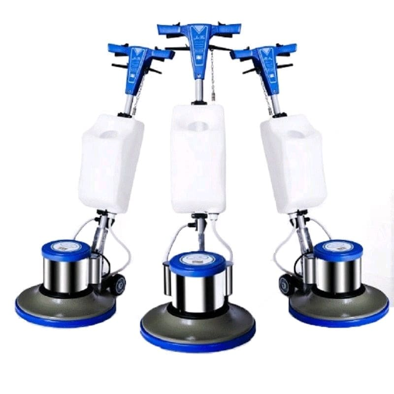
Máy chà sàn Magnum mạnh mẽ và có độ bền cao
Máy chà sàn Hiclean
Xuất xứ: Thái Lan
Điểm nổi bật: Thương hiệu HiClean, có nguồn gốc từ Thái Lan và nhà máy sản xuất đặt tại Trung Quốc. Sản phẩm của HiClean đa dạng về mẫu mã, thiết kế đẹp mắt, màu sắc trang nhã và chất lượng vượt trội. Các sản phẩm như máy hút bụi công nghiệp, máy chà sàn và máy đánh bóng sàn của HiClean được thiết kế tiện ích, thân thiện với người dùng với các thông số dễ hiểu và dễ sử dụng. Quá trình vận hành các thiết bị vệ sinh HiClean cũng rất êm ái, nhẹ nhàng và không gây tiếng ồn, đảm bảo không ảnh hưởng đến con người và môi trường.
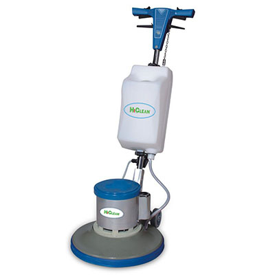
Máy chà sàn Hiclean màu sắc trang nhã và chất lượng vượt trội
Máy chà sàn Cleantech
Xuất xứ: Thái Lan
Đặc điểm nổi bật: Cleantech là thương hiệu chuyên sản xuất thiết bị vệ sinh công nghiệp uy tín hàng đầu tại Thái Lan. Chủ đạo có: máy chà sàn, máy hút bụi các loại,.. Người dùng có thể yên tâm khi tất cả các thiết bị vệ sinh làm sạch của Cleantech trước khi đưa ra thị trường đều được kiểm định chặt chẽ từ đội ngũ chuyên gia của hãng.
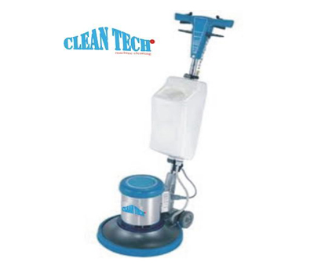
Máy chà sàn Cleantech được kiểm định chặt chẽ từ đội ngũ chuyên gia
Máy chà sàn Clepro
Xuất xứ: Italia
Điểm nổi bật: Máy chà sàn Clepro được tập đoàn KANOZEN nghiên cứu và sản xuất trực tiếp tại Italia, đảm bảo đáp ứng các tiêu chuẩn về chất lượng và độ an toàn của Châu Âu. Với công nghệ tiên tiến, máy chà sàn Clepro được trang bị motor 100% lõi đồng và hệ thống lọc đa tầng, cùng nhiều tính năng vượt trội khác. Máy đảm bảo khả năng vận hành mạnh mẽ và làm sạch tối ưu mà không gây ảnh hưởng hay hư hại đến bề mặt sàn.
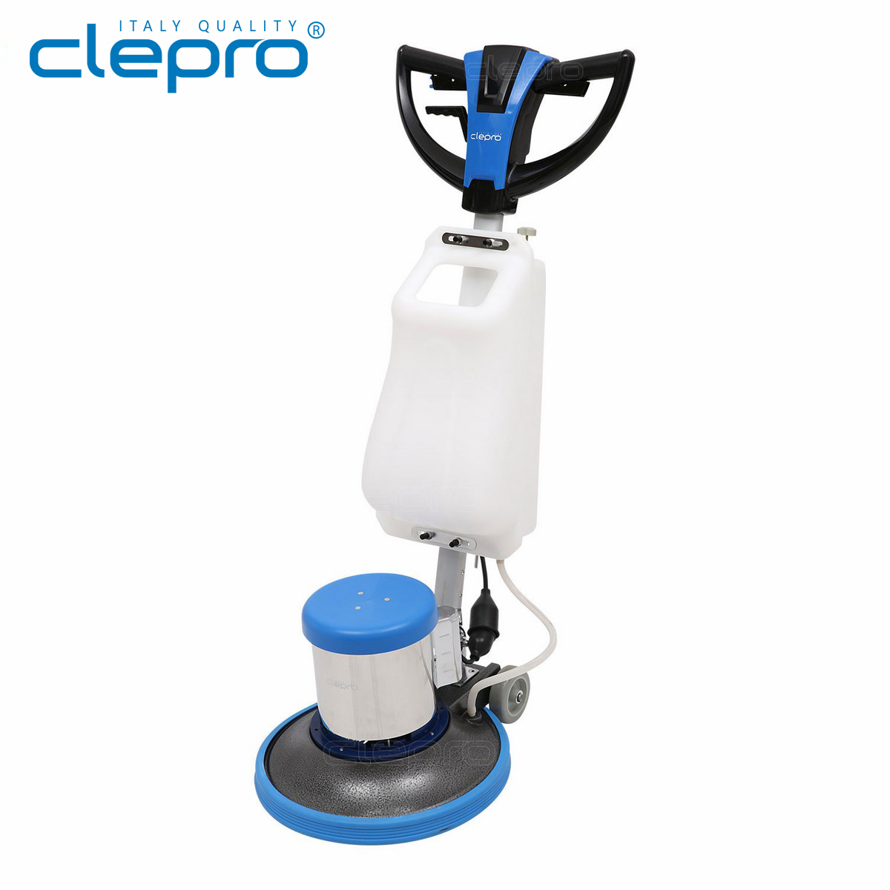
Máy chà sàn Clepro đáp ứng các tiêu chuẩn về chất lượng và độ an toàn
Máy chà sàn IPC
Xuất xứ: Italy
Đặc điểm nổi bật: Máy chà sàn IPC với thiết kế thông minh và tính năng vượt trội, giúp quá trình làm sạch sàn nhà trở nên đơn giản hơn bao giờ hết. Được trang bị đầu chà có khả năng xoay 360 độ, máy dễ dàng làm sạch các khu vực góc cạnh và các bề mặt không bằng phẳng. Ngoài ra, máy chà sàn IPC còn cho phép điều chỉnh độ sâu chà, giúp bạn dễ dàng điều chỉnh mức độ mài mòn của đầu chà phù hợp với các loại sàn khác nhau.
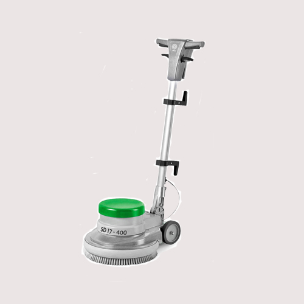
Máy chà sàn IPC thiết kế thông minh và tính năng vượt trội
Máy chà sàn Karcher
Xuất xứ: Đức
Điểm nổi bật: Karcher nổi tiếng với chất lượng Đức và độ bền cao. Thiết kế ergonomics và tính năng tiện ích làm cho việc sử dụng Karcher trở nên dễ dàng và thuận tiện.
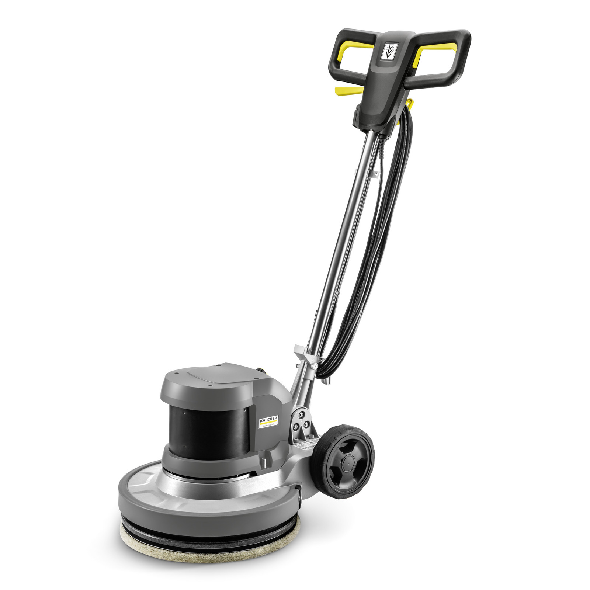
Máy chà sàn Karcher chất lượng Đức và độ bền cao
Máy chà sàn Eureka
Xuất xứ: Mỹ
Đặc điểm nổi bật: Eureka nổi tiếng với tính linh hoạt và đa dạng. Thiết kế hiện đại và tính năng thông minh giúp Eureka hoạt động một cách linh hoạt trên nhiều loại bề mặt và trong nhiều môi trường làm sạch khác nhau.
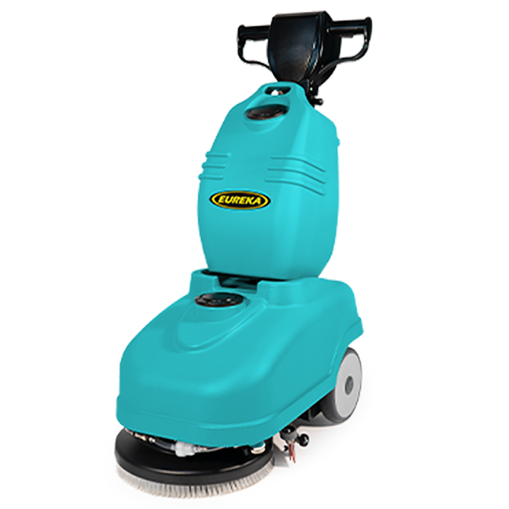
Máy chà sàn Eureka tính linh hoạt và đa dạng
Máy chà sàn gia đình không chỉ giúp mọi người tiết kiệm thời gian và công sức mà còn đảm bảo môi trường sống sạch sẽ, an toàn cho sức khỏe. Bằng việc chọn lựa sản phẩm phù hợp với nhu cầu và đánh giá cao về chất lượng, gia đình sẽ có được một người bạn đồng hành đáng tin cậy trong việc duy trì sự trong lành của không gian sống hàng ngày.
 Có nên mua máy hút bụi công nghiệp cho gia đình?
Có nên mua máy hút bụi công nghiệp cho gia đình? TOP 5 máy hút bụi công nghiệp 3000W bán chạy đáng đầu tư
TOP 5 máy hút bụi công nghiệp 3000W bán chạy đáng đầu tư Top 5 loại máy hút bụi công nghiệp xưởng gỗ hiệu quả
Top 5 loại máy hút bụi công nghiệp xưởng gỗ hiệu quả